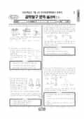

문제지


시험지를 먼저 풀어 보세요. 등급컷·표준점수·난이도는 흐리게 가려 뒀어요.
| 등급 | 원점수 | 표준점수 | 백분위 | 누적 |
|---|---|---|---|---|
| 1 | 46 | 68 | 96 | 4.02% |
| 2 | 42 | 65 | 90 | 11.25% |
| 3 | 35 | 59 | 77 | 24.06% |
| 4 | 26 | 52 | 60 | 40.46% |
| 5 | 17 | 45 | 41 | 60.99% |
| 6 | 12 | 41 | 23 | 78.84% |
| 7 | 9 | 39 | 14 | 90.16% |
| 8 | 5 | 36 | 3 | 97.97% |
등급별 컷 · 입시기관 3곳 원점수 추정 종합(EBSi·메가스터디·대성마이맥) · 만점 50점
| 등급 | 표준점수 이상 | 인원(명) | 비율 |
|---|---|---|---|
| 1 | 68 | 1,167 | 4.02% |
| 2 | 65 | 2,098 | 7.23% |
| 3 | 59 | 3,717 | 12.81% |
| 4 | 52 | 4,757 | 16.4% |
| 5 | 45 | 5,957 | 20.53% |
| 6 | 41 | 5,179 | 17.85% |
| 7 | 39 | 3,284 | 11.32% |
| 8 | 36 | 2,266 | 7.81% |
| 9 | 32 | 587 | 2.02% |
시·도교육청 공개 자료
출처: 시·도교육청이 공개한 전국연합학력평가 성적 분석·통계자료(공개 자료 보기).
발행 기관: 시·도교육청(전국연합학력평가). 파일 위치: 이 사이트가 보관한 사본. 저작권은 발행 기관에 있습니다. 원본과 다르거나 게시 중단이 필요하면 연락처로 알려 주세요. 등급컷 출처 구분은 데이터 원칙에서 설명합니다.
막대 색은 역대 대비 난이도 · 진한 막대가 이 시험 · 막대를 누르면 그 회차로 이동
| 회차 | 1등급컷 | 표점 최고 | 1등급 표점 | 난이도 |
|---|---|---|---|---|
| 7월 학평2025년 고3이 시험 | 46 | 71 | 68 | 쉬움 |
| 3월 학평2025년 고3 | 47 | 73 | 70 | 보통 |
| 10월 학평2024년 고3 | 47 | 69 | 67 | 매우 쉬움 |
| 7월 학평2024년 고3 | 46 | 69 | 66 | 매우 쉬움 |
| 3월 학평2024년 고3 | 43 | 77 | 70 | 어려움 |
| 10월 학평2023년 고3 | 45 | 71 | 67 | 보통 |
| 7월 학평2023년 고3 | 42 | 77 | 70 | 매우 어려움 |
| 4월 학평2023년 고3 | 42 | 76 | 68 | 쉬움 |
| 3월 학평2023년 고3 | 39 | 81 | 70 | 매우 어려움 |
| 10월 학평2022년 고3 | 44 | 74 | 69 | 보통 |